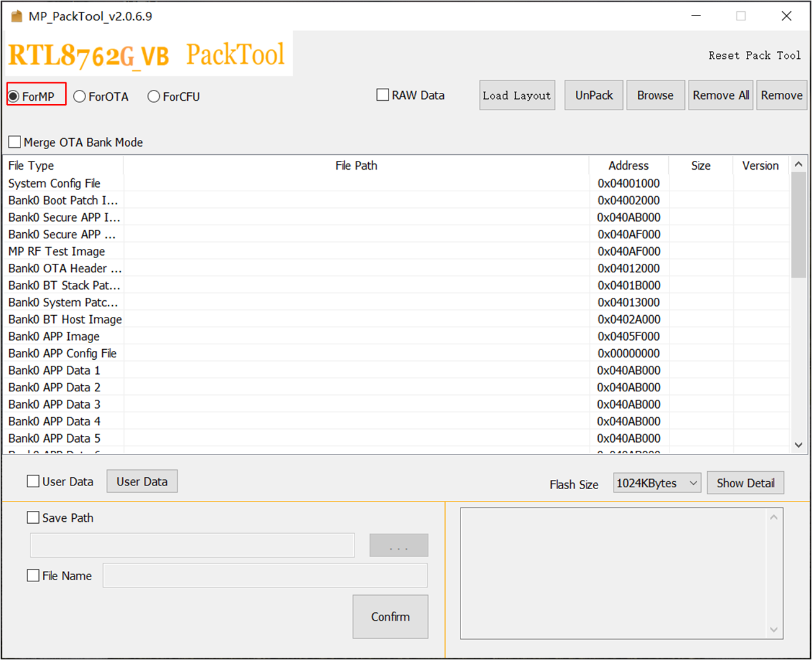
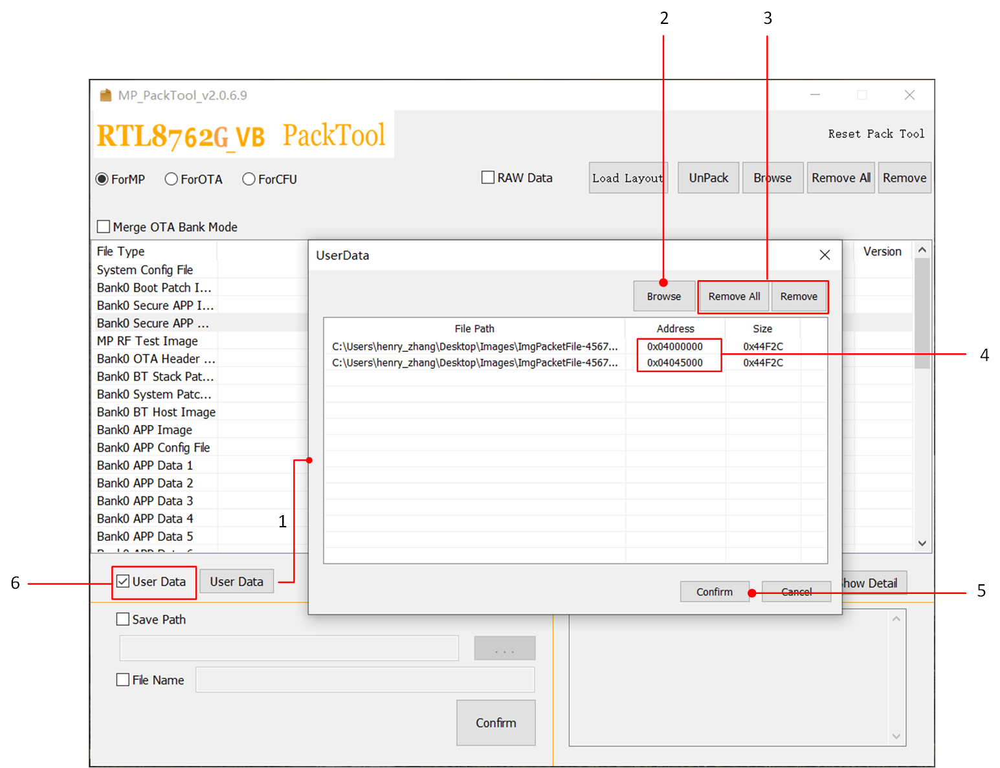
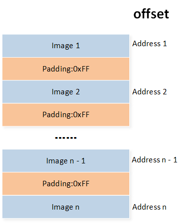
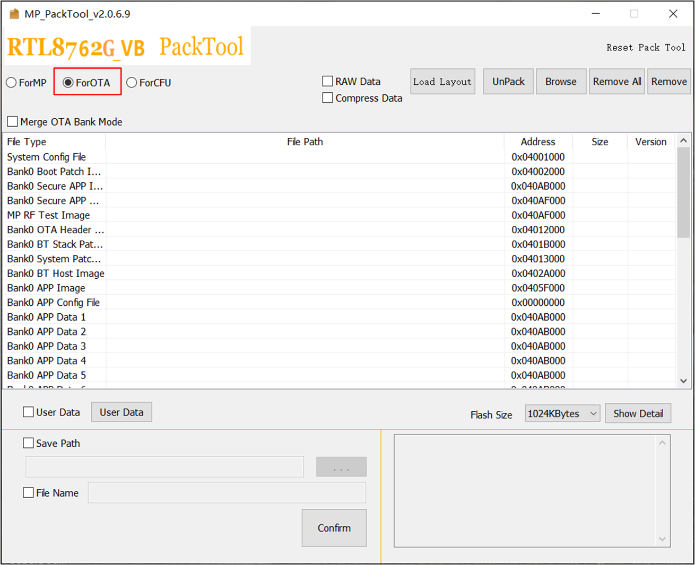
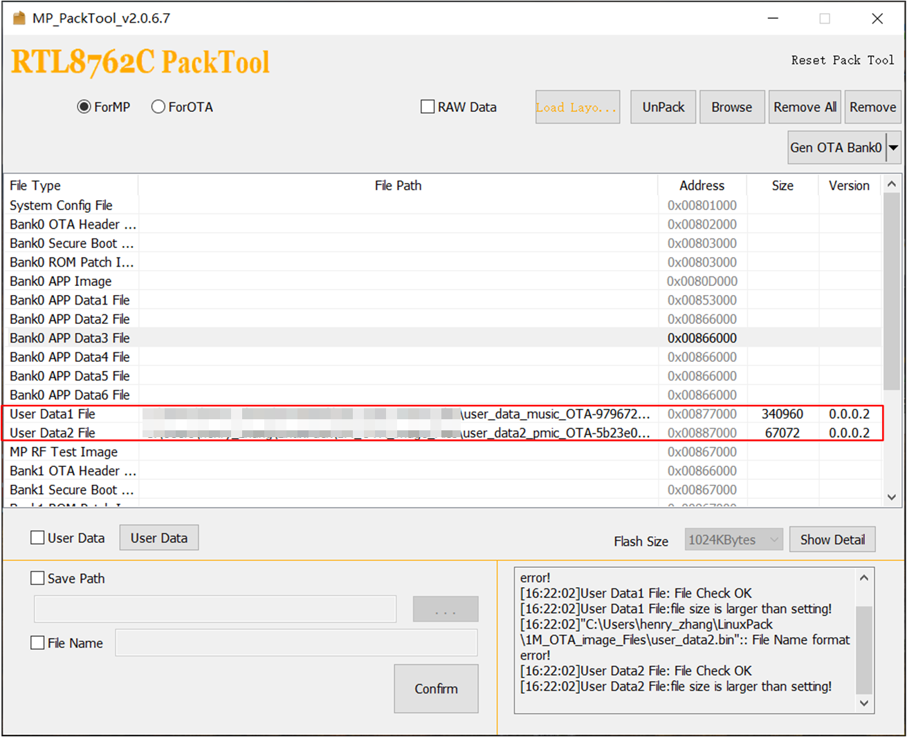
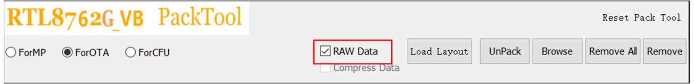
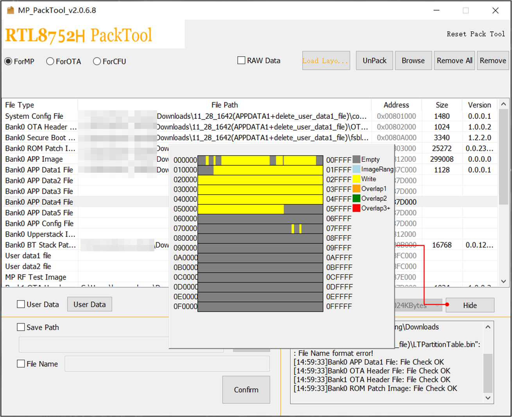
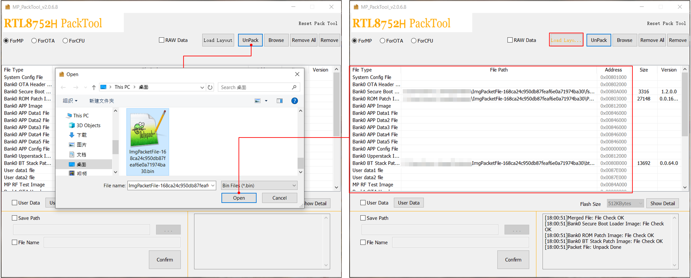

MP Pack Tool
本文档主要介绍 MP Pack Tool 工具的功能及其使用，支持 RTL8762C、RTL8762D、RTL8762E、RTL8762G_VA、RTL8762G_VB 和 RTL8752H 等芯片 。 MP Pack Tool 用于合并子文件并生成 MP、OTA 或 CFU 等数据包文件。
MP 包：用于批量生产，可以使用 MP Tool 烧录到 flash 中。
OTA 包：用于空中下载更新，可以使用 Android OTA APP 或 iOS OTA APP 进行升级。
CFU 包：用于组件固件更新，可以使用 CFU Tool 进行升级。
可以前往 RealMCU 平台获取 MP Pack Tool 程序。
打包步骤

MP Pack 打包流程
打包模式选择
有如下三种模式，此处以 MP 模式为例，OTA 、CFU 打包流程基本一致。
ForMP
ForOTA
ForCFU
导入
flash map.iniFlash map 是指示 flash layout 的文件，具体可以参考 Flash Map Generate Tool。
导入其他文件
点击 Browse 选择文件后，点击 打开 按键导入待打包的文件。
MP Pack Tool 会检查这些导入的文件是否符合要求，包含 MD5 验证，IC 验证等等。符合要求的导入文件会显示在步骤 4 所示的列表中。
导入的文件列表
包含：文件名称、文件路径、文件地址、文件大小、文件版本。
删除文件（如果有必要）
如果有添加错的文件，可以选择需要移除的文件并点击 Remove 按键，移除选定的文件。
点击 Remove All 按键可移除全部文件。
移除文件将会清空 “File Path”、“Size” 及 “Version” 栏中的内容，并将 “Address” 栏中的地址设置为默认值。
导入 User Data（可选）
修改保存路径和文件名称（可选）
勾选 Save Path 前面的选择框后，可以点击 ... 对文件生成路径进行选择，默认的文件生成位置是 MP Pack Tool 根目录。
勾选 File Name 前面的选择框后，可以在文本框中对生成文件的文件名进行设置，默认的文件名称为：
ImgPacketFile-MD5.bin
生成打包文件
点击 Confirm 后会在指定的位置生成打包文件。
Log 窗体
显示一些提示信息，如果有报错可以查看窗口中的信息。
MP 打包
MP 包主要用于批量生产，可以使用 MP Tool 烧录到 flash 中。
{kind=link}

MP 打包界面
勾选 ForMP 选择框后，MP Pack Tool 将打出 MP 包。
添加 User Data
MP 模式支持打包用户自定义数据（User Data），添加步骤见下图：
{kind=link}

MP 添加 User Data
点击 User Data 打开 User Data 添加窗口。
点击 Browse ，选择需要添加的 User Data 文件。
如果有添加错的文件，可以选择需要移除的文件并点击 Remove 按键，可移除选定的文件；点击 Remove All 按键可移除全部文件。
用户需要手动修改 User Data 文件的地址，并确保该地址不会和其他文件有冲突，否则在点击 Confirm 按键后会弹窗提示：Overlapping Exists!
点击 Confirm 按键完成 User Data 添加
上述步骤完成后，此处 User Data 选择框会自动勾选，表示 User Data 会被打包。
备注
用户需要确保添加的 User Data 不会与其他文件发生重叠等冲突。
添加 User Data 后，MP Pack Tool 打包将额外生成一个包含
WithUserData的打包文件。
MP Raw Data
勾选 Raw Data 选择框时，将会生成 Raw 数据包，如下图所示：

MP Raw 数据包
勾选 Raw Data 后，打包将生成两份文件：
普通 MP 数据包文件
MP Raw Data 格式 的文件
{kind=link}

MP Raw Data 格式
OTA 打包
OTA 包用于空中下载更新，可以使用 Android OTA APP 或 iOS OTA APP 进行升级。
{kind=link}

OTA 打包界面
勾选 ForOTA 选择框后，MP Pack Tool 将打出 OTA 包。
添加 User Data
对于 RTL8762C、RTL8762G_VB、RTL8752H 等型号的 IC，提供了下图所示的 User Data 打包方式；对于其他型号的 IC，不支持打包 User Data 进行 OTA。
{kind=link}

OTA 添加 User Data
备注
这种方式添加的 User Data，需要包含 MP Header 和 Image Header，此时 User Data 按其他 Image 相同的方式打包，且可以用作 OTA 升级。
OTA Raw Data
勾选 Raw Data 选择框时，将会生成 Raw 数据包，如下图所示：
{kind=link}

OTA Raw 数据包
根据 bank 配置不同，将生成如下的打包文件：
Single bank：
普通 OTA 模式下打包的文件
OTA Raw Data 文件
Dual bank：
普通 OTA 模式下打包的文件
Bank0 OTA Raw Data 文件
Bank1 OTA Raw Data 文件
全 Bank OTA Raw Data 文件
OTA Raw Data 数据包的格式如下图所示：

OTA Raw Data 格式
Compress 模式
OTA 打包可以选择 Compress 模式，勾选后，MP Pack Tool 会压缩比 flash map.ini 中 OTA_TMP_SIZE 大的 image。如下图所示：

OTA Compress 模式
CFU 打包
CFU 包用于组件固件更新，可以使用 CFU Tool 进行升级。

CFU 打包界面
勾选 ForCFU 选择框后，MP Pack Tool 将打出 CFU 包。
备注
有两种 CFU 打包格式：
V1：多个 Image 打包成一个
.payload文件和.offer文件V2：每个 Image 打包成一个
.payload文件和.offer文件
可以点击 V1 和 V2 进行切换。具体使用哪种格式，请咨询 FAE。
文件内存分布
MP Pack Tool 提供显示存储分布的功能，可以用来检查文件是否会出现重叠。点击 Show Detail / Hide 按键即可显示/关闭存储分布对话框，如下图所示：
{kind=link}

文件内存分布
备注
生成打包文件时，MP Pack Tool 会检查文件是否存在重叠，如果存在则会禁止打包，在配置 flash map 时需要保证文件之间不存在任何重叠。
解包
MP Pack Tool 可以将打包好的包文件进行解包，该功能适用于 MP、OTA 包，不支持 Raw Data 格式的包文件。
点击 UnPack 按键并在文件选择对话框中选择包文件，解包功能将会清空子文件配置并添加包文件中所有的子文件，解包的子文件会生成在与包文件同目录的同名文件夹中。如下图所示：
{kind=link}

解包